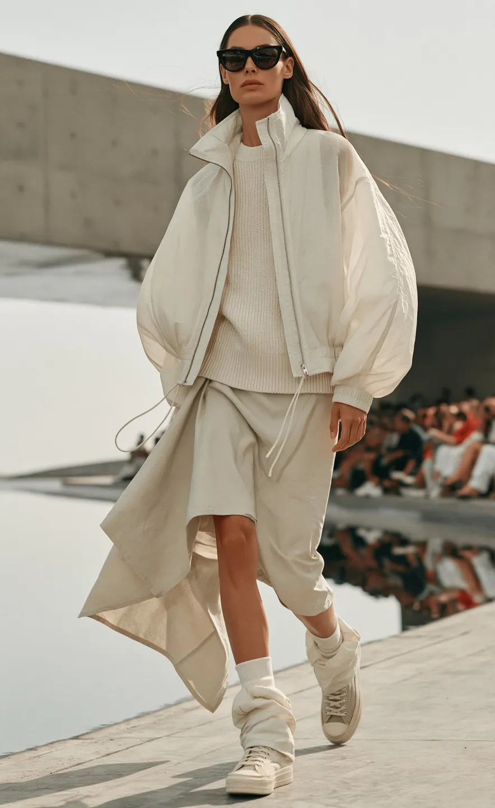

자체·가상 브랜드 작업
KRIS W · 2027 S/S 가상 런웨이
KRIS W 컬렉션의 실루엣과 런웨이 분위기를 보여주는 AI 패션쇼 포트폴리오입니다. 외부 고객의 납품 프로젝트로 표기하지 않습니다.
담당 범위와 제작 내용 보기 ↗홈 / AI 패션쇼·가상 런웨이 영상 제작
GRaY D. Lab · AI FASHION VISUAL STUDIO
AI 패션쇼는 생성형 AI로 모델, 의상, 무대와 움직임을 구성해 컬렉션을 영상으로 보여주는 제작 방식입니다. 그레이디랩은 패션 디렉팅을 바탕으로 룩의 등장 순서와 워킹, 조명, 편집의 리듬을 함께 설계합니다.
한 장의 착장 이미지와 달리, 런웨이는 움직이는 동안 의상의 실루엣과 모델의 연결감이 유지되어야 합니다. 기획 단계에서 강조할 룩과 워킹 방향을 정하고, 생성 컷의 연결과 조명 변화를 검토하는 방식으로 접근합니다.

자체·가상 브랜드 작업
KRIS W 컬렉션의 실루엣과 런웨이 분위기를 보여주는 AI 패션쇼 포트폴리오입니다. 외부 고객의 납품 프로젝트로 표기하지 않습니다.
담당 범위와 제작 내용 보기 ↗백화점 미디어월·모바일용 납품
신세계 사계·타임스퀘어 패션 필름 및 디지털 매거진 프로젝트입니다. 그레이디랩이 콘셉트 기획, 스토리보드 연출, AI 이미지·영상 생성, 후반 편집과 BGM 마스터링을 총괄했습니다.
담당 범위와 제작 내용 보기 ↗컬렉션 소개용 런웨이 영상이 중심입니다. 룩별 분할 영상이나 가로·세로 버전이 필요한 경우 별도 범위로 협의합니다.
일정·가격·해상도·수정 횟수와 사용 범위는 프로젝트별 협의 사항입니다.
가상 런웨이와 실제 현장 촬영은 구분합니다. KRIS W 사례는 자체·가상 브랜드 작업으로, 외부 고객 납품 실적과 구별해 소개합니다.
재현이 중요한 실루엣·소재·장식 디테일과 참고 자료를 먼저 확인합니다. 생성 과정에서 달라질 수 있는 요소를 검토하고 제작 가능 범위를 협의합니다.